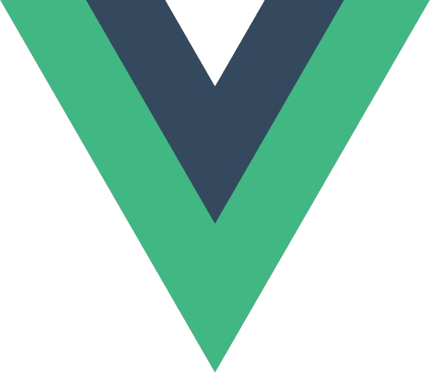
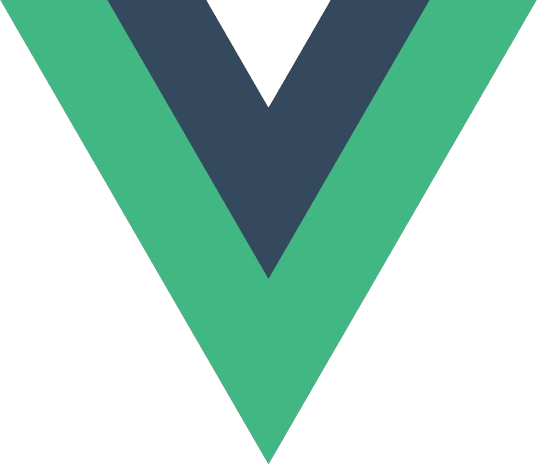

Darío Hernán Guaraz
Technology Specialist
Sobre Mí
Apasionado por la tecnología y la creatividad, combino más de una
década de experiencia en entornos técnicos con una visión integral
para desarrollar soluciones digitales efectivas. Como
Desarrollador Full Stack y Consultor IT, ofrezco servicios de
desarrollo web, soporte técnico e implementación de soluciones
informáticas para pymes y profesionales.
Mi enfoque va más allá del código: analizo, diseño, implemento y
acompaño todo el ciclo de vida de un proyecto. Tengo una sólida
base en infraestructura, redes y microinformática, y una fuerte
orientación a metodologías ágiles, trabajo en equipo y atención
centrada en el cliente.
Esta mirada tecnológica integral me permite integrar equipos,
liderar iniciativas, articular entre diferentes áreas dentro de un
proyecto u empresa, o bien trabajar de forma freelance según cada
necesidad.
Creo en la innovación con propósito, en la empatía como valor
personal, y en el diseño de experiencias que realmente conecten
con quienes las usan. Actualmente abierto a oportunidades
freelance, colaboraciones o propuestas laborales que valoren la
versatilidad, el compromiso y la evolución constante.
DARÍO HERNAN GUARAZ
-Experiencia-
Admin. del Personal (RRHH)
Febrero 2013 - Marzo 2021
- -Autonomía en el área de administración del personal.
- -Desarrollo de soft skills como la comunicación asertiva (oral y escrita) tanto de manera individual como en grupos de trabajo.
- -Fomento de la participación e integración del personal, logrando un equipo más unido y aprovechando la diversidad.
- -Administración eficiente del tiempo y el trabajo.
- -Control, actualización y organización de archivos y datos bibliográficos.
- -Coordinación con diversas entidades externas mediante tramites internos.
Tecnologias de la Informacion (IT)
Abril 2021 - Actualidad
- -Experiencia brindando servicio a mas de 1000 usuarios en tareas de soporte al usuario, redes e infraestructura informática.
- -Gestion de incidencias por sistema de tickets.
- -Aportes de conocimiento y proactividad al equipo desarrollando sistemas propios e implementando esquemas (SCRUM) y herramientas de metodologías agiles como tableros Kanban y Slack.
- -Diagnósticos e Instalación y configuración de dispositivos de red.
- -Manejo de equipos en red de Dominio (AD).
- -Asesoramiento en compras y compatibilidad de componentes informáticos.
- - Asistencia técnica en eventos internos y externos.
Programador Freelancer
Agosto 2024 - Actualidad
- -Trabajos de desarrollo de aplicaciones web para pequeñas y medianas empresas.
- -Manejo de metodologías agiles y entregas periódicas de sprints (MVP).
- -Autodidacta en Robótica y programación de microcontroladores.
- -UX Reseach.
- -UX Writer.
- -UI designer.
Educación
- Full-Stack Developer - CODERHOUSE - En Curso
- Técnico Superior en Programación - TECLAB - Graduado: 2024
- Técnico en Informática Personal y Profesional - ISCJ - Graduado: 2009
Cursos y Certificaciones
- Desarrollo Web - CODERHOUSE - 2025
- Front-End JS - Talento Tech (Gob. Ciudad Bs. As.) - 2025
- JavaScript Flex - CODERHOUSE - 2025
- Bootcamp 4.0 (Python, IA y Ciberseguridad aplicado a la industria) - ingelearn - 2025
- Base de Datos PostgreSQL Server - Udemy - 2022
- CISCO CCNAv1 - CISCO - 2021
- CISCO Introduction to networks - CISCO - 2024
- Introduction to Cybersecurity - CISCO - 2021
- Programacion Full Stack - INAP - 2024
- Introduccion a la Ciencia de Datos - INAP - 2024
- Big Data al servicio de una gestión pública eficaz - INAP - 2025
- Acelerador de Carrera con Power BI - Empowerdata - 2024
-Proyectos-
-FADANI Projects
Fadani representa un avance significativo en la tecnología de
entretenimiento doméstico, ofreciendo una solución de Ambilight
accesible y eficiente. Con Fadani, estamos redefiniendo la
experiencia audiovisual en el hogar y ansiosos por compartir sus
innovaciones con el mundo.
(Ver Proyecto)
-Multielda
Para mi tesis en la Tecnicatura en Programación, decidí realizar una
plataforma online que consiste en un catálogo web de series y
películas. Los criterios a su desarrollo fueron: que sea funcional,
gratuito, sin logeos para hacerlo más sencillo para el usuario. Todo
el material que allí se encuentra es de uso y licencia libre sin
publicidad.
(Ver Proyecto)
-Encuesta de Satisfacción de Servicio
Con el fin de mejorar la calidad del servicio del área de soporte
IT, se desarrolló un formulario en línea adaptativo y responsivo
(Mobile first). En este, el usuario podrá, entre otras cosas,
calificar la calidad y el tiempo de resolución/respuesta del técnico
involucrado. Los datos ingresados en dicho formulario se almacenan
en una base de datos relacional (SQL) en un equipo local. Esta base
de datos puede consultarse mediante PowerBI, lo que permite realizar
un análisis cualitativo y cuantitativo más detallado gracias al
feedback del propio usuario/cliente. Aplicando este sistema en el
proceso de calidad, se podrá medir y mejorar de forma continua el
desempeño del área de soporte IT.
(Ver Proyecto)
-Formulario de Suscripcion
Formulario de suscripcion por email con interfaz adaptative
responsive. La finalidad de este proyecto fue la integracion de la
API de EmailJS. La misma es totalmente funcional y puede probarla
con su email.
(Ver Proyecto)
-War Of Gods
Juego online inspirado en una batalla mitológica entre dioses, con
una mecánica estratégica de cartas basada en el clásico sistema de
“piedra, papel o tijera”, reinventado con habilidades únicas,
efectos visuales dinámicos y componentes de toma de decisiones en
tiempo real.
(Ver Proyecto)
-Form. Ajedréz
Desarrollo de una aplicación completa para la gestión de torneos de
ajedrez. La plataforma cuenta con autenticación de usuarios mediante
un formulario de acceso con credenciales, y opción de generación
desde la misma interfaz. El frontend fue desarrollado en React con
TypeScript, mientras que el backend utiliza Python con Django,
integrando una base de datos en PostgreSQL. Una vez autenticado, el
usuario puede crear torneos, visualizar en tiempo real la cantidad
de jugadores registrados y unirse a ellos. Debido a la arquitectura
completa con backend y base de datos, el proyecto no cuenta con
despliegue activo, pero se encuentra disponible en un repositorio
público junto con instrucciones detalladas para su instalación y
ejecución local.
(Ver Proyecto)
-Winers Wines
WinersWines es una aplicación web moderna y amigable que ofrece una
experiencia completa de compra de vinos en línea. Su principal
objetivo es facilitar al usuario la búsqueda, selección y pedido de
vinos artesanales o boutique, combinando funcionalidad intuitiva con
diseño adaptativo y responsivo. A través de una interfaz clara y
dinámica, los visitantes pueden explorar un catálogo de productos,
buscar vinos por nombre o descripción, agregar sus favoritos a un
carrito y concretar su pedido directamente vía WhatsApp, agilizando
el proceso de compra y fomentando el contacto personalizado con el
vendedor.
(Ver Proyecto)
-ServiLex Courrier
ServiLex Moto Encomiendas es una landing page profesional, moderna y
optimizada, especialmente diseñada para brindar servicios de
mensajería rápida y segura, orientados a estudios jurídicos y
contables de CABA y GBA. El foco principal de la aplicación es la
confidencialidad, eficiencia y conexión directa con el cliente a
través de WhatsApp. La página está pensada como una vitrina digital
simple y efectiva, que destaca los servicios de moto mensajería
especializada en trámites legales, contables y entregas delicadas.
Mediante una interfaz limpia, animaciones sutiles y estructura
semántica, transmite profesionalismo y confianza
(Ver Proyecto)
-Visualent
Desarrollé el sitio institucional de Visualent, un centro
especializado en salud visual, utilizando React-JS. El proyecto
incluyó la implementación de una estructura responsiva, navegación
intuitiva, y componentes reutilizables para presentar la información
de manera clara y profesional. Se trabajó en base a los valores del
cliente, priorizando accesibilidad, rendimiento y usabilidad.
(Ver Proyecto)
-Calandria
ctualmente estoy trabajando en el desarrollo de la landing page para
una agencia en crecimiento dedicada al marketing y a la creación de
soluciones digitales. El sitio está en proceso de construcción y se
va ampliando progresivamente a medida que surgen nuevos materiales y
definiciones. El sitio fue desarrollado en React-JS, con un enfoque
en la experiencia del usuario, diseño responsivo y optimización del
rendimiento.
(Ver Proyecto)
-Skills-


 
